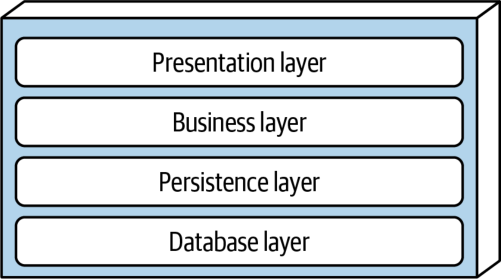
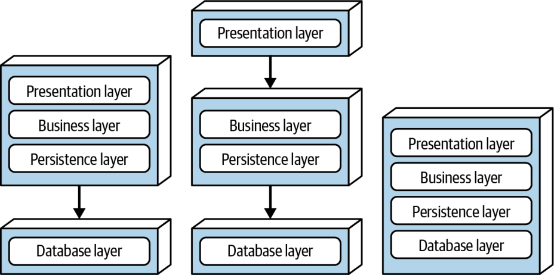
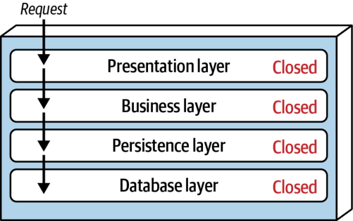

سبک معماری لایهای، که معماری چندلایه (n-tiered) نیز نامیده میشود، یکی از رایجترین سبکهای معماری است. این سبک به دلیلِ سادگی، آشنایی و هزینهٔ پایینش، استانداردِ عملیِ بسیاری از برنامههای میراثی است.
سبک معماری لایهای ممکن است به دامِ چند ضدالگوی معماری بیفتد، از جمله ضدالگوهای معماری ضمنی (Architecture by Implication) و معماری اتفاقی (Accidental Architecture). وقتی توسعهدهندگان یا معماران «فقط شروع به کدنویسی میکنند» و مطمئن نیستند از کدام سبک معماری استفاده میکنند، احتمالِ زیادی هست که در حالِ پیادهسازیِ سبک معماری لایهای باشند.
مؤلفهها در سبک معماری لایهای در لایههای افقیِ منطقی سازماندهی میشوند، چنانکه در شکل ۱۰-۱ نشان داده شده است؛ هر لایه نقشِ مشخصی در برنامه انجام میدهد (مانندِ منطق ارائه یا منطقِ کسبوکار). هرچند هیچ محدودیتِ مشخصی از نظرِ شمار و نوعِ لایههایی که باید وجود داشته باشند در کار نیست، بیشترِ معماریهای لایهای از چهار لایهٔ استاندارد تشکیل میشوند: Presentation، Business، Persistence و Database. برخی معماریها لایههای Business و Persistence را ترکیب میکنند؛ بهویژه زمانی که منطقِ ماندگاری (مانندِ SQL یا HSQL) درونِ مؤلفههای لایهٔ Business تعبیه شده باشد. برنامههای کوچکتر ممکن است فقط سه لایه داشته باشند، در حالی که برنامههای کسبوکاریِ بزرگتر و پیچیدهتر ممکن است پنج لایه یا بیشتر داشته باشند.

شکل ۱۰-۲ گونههای توپولوژی را از منظرِ لایهبندیِ فیزیکی (physical layering) (استقرار) نشان میدهد. گونهٔ نخست لایههای Presentation، Business و Persistence را در یک واحد استقرارِ واحد ترکیب میکند و لایهٔ Database معمولاً بهصورتِ یک پایگاهدادهٔ فیزیکیِ بیرونیِ جداگانه (یا سیستم فایل (filesystem)) نمایش داده میشود. گونهٔ دوم لایهٔ Presentation را بهطورِ فیزیکی در واحد استقرارِ خودش جدا میکند و لایههای Business و Persistence را در واحد استقرارِ دومی ترکیب میکند. در این گونه نیز لایهٔ Database معمولاً از راهِ یک پایگاهداده یا سیستم فایلِ بیرونی بهطورِ فیزیکی جدا میشود. گونهٔ سوم هر چهار لایهٔ استاندارد، از جمله لایهٔ Database، را در یک استقرارِ واحد ترکیب میکند. این گونه ممکن است برای برنامههای کوچکتری که پایگاهدادهٔ تعبیهشدهٔ درونی یا پایگاهدادهٔ درونحافظهای (in-memory database) دارند، مانندِ برنامههای دستگاههای همراه، سودمند باشد. بسیاری از محصولاتِ درونسازمانی (on-premises یا on-prem) با همین گونهٔ سوم ساخته و به مشتریان تحویل داده میشوند.

هر لایه نقش و مسئولیتِ مشخصی دارد و پیرامونِ کاری که برای برآوردنِ یک درخواستِ کسبوکاریِ خاص باید انجام شود، انتزاعی پدید میآورد. برای نمونه، لایهٔ Presentation مسئولِ رسیدگی به همهٔ منطقِ رابط کاربری و ارتباط با مرورگر است، در حالی که لایهٔ Business مسئولِ اجرای قواعدِ کسبوکاریِ مشخصِ مرتبط با درخواست است. لایهٔ Presentation لازم نیست بداند یا نگرانِ این باشد که دادههای مشتری را چگونه به دست آورد؛ فقط باید آن اطلاعات را با قالبی مشخص روی صفحه نمایش دهد. به همین ترتیب، لایهٔ Business لازم نیست نگرانِ این باشد که دادههای مشتری را برای نمایش روی صفحه چگونه قالببندی کند یا حتی آن دادهها از کجا میآیند؛ فقط باید دادهها را از لایهٔ Persistence بگیرد، منطقِ کسبوکار را روی آنها اجرا کند (مانندِ محاسبهٔ مقادیر یا تجمیعِ دادهها) و آن اطلاعات را به لایهٔ Presentation بفرستد.
این جداسازیِ دغدغهها (separation of concerns) در سبک معماری لایهای ساختنِ مدلهای اثربخشِ نقش و مسئولیت را آسان میکند. دامنهٔ مؤلفههای درونِ هر لایه محدود است و فقط با منطقِ مربوط به همان لایه سروکار دارند. برای نمونه، مؤلفههای لایهٔ Presentation فقط منطق ارائه را مدیریت میکنند، در حالی که مؤلفههای لایهٔ Business فقط منطقِ کسبوکار را. این امر به توسعهدهندگان امکان میدهد از تخصصِ فنیِ خاصِ خود بهره بگیرند و بر جنبههای فنیِ حوزه (مانندِ منطق ارائه یا منطقِ ماندگاری) تمرکز کنند. اما بهای این مزیت، نبودِ چابکیِ کلنگر (holistic agility) است؛ یعنی توانِ کلِ سیستم برای پاسخگوییِ سریع به تغییر.
معماری لایهای معماریای افرازشدهٔ فنی است (در برابرِ معماریِ افرازشدهٔ حوزهای). این یعنی، چنانکه در فصل ۹ آموختید، مؤلفهها بر پایهٔ نقشِ فنیشان در معماری (مانندِ ارائه یا کسبوکار) از هم جدا میشوند، نه بر پایهٔ حوزه (مانندِ مشتری). در نتیجه، هر حوزهٔ کسبوکاریِ مشخص در سراسرِ لایههای معماری پخش میشود. برای نمونه، حوزهٔ «مشتری» در لایههای Presentation، Business، Rules، Services و Database جای دارد و همین اعمالِ تغییرات در این حوزه را دشوار میکند. در نتیجه، رویکرد DDD با سبک معماری لایهای چندان سازگار نیست.
لایهها در این سبک معماری حوزههای مشخصی از مسئولیتِ فنی را در خود کپسوله میکنند، اما خودِ لایهها ممکن است ویژگیهای دیگری نیز از خود نشان دهند.
هر لایه میتواند بسته یا باز باشد. اگر لایهای بسته (closed) باشد، درخواستی که از لایهٔ بالایی به سوی لایهٔ پایینی حرکت میکند نمیتواند از هیچ لایهای بگذرد؛ باید از لایهٔ بلافاصله زیرین عبور کند تا به لایهٔ بعدی برسد (شکل ۱۰-۳ را ببینید). برای نمونه، در معماریای که همهٔ لایههایش بستهاند، درخواستی که از لایهٔ Presentation آغاز میشود باید نخست از لایهٔ Business و سپس از لایهٔ Persistence بگذرد تا سرانجام به لایهٔ Database برسد.

توجه کنید که در شکل ۱۰-۳، برای درخواستهای بازیابیِ ساده بسیار سریعتر و آسانتر بود که لایهٔ Presentation مستقیماً به پایگاهداده دسترسی داشته باشد و از لایههای غیرضروری بگذرد (چیزی که در اوایلِ دههٔ ۲۰۰۰ به الگوی Fast-Lane Reader شهرت داشت). برای اینکه چنین شود، لایههای Business و Persistence باید باز (open) باشند تا درخواستها بتوانند از لایههای دیگر بگذرند. کدام بهتر است، لایههای باز یا لایههای بسته؟ پاسخِ این پرسش در مفهومی کلیدی به نامِ لایههای جداسازی (layers of isolation) نهفته است.
مفهومِ لایههای جداسازی یعنی تغییراتی که در یک لایه از معماری اعمال میشوند، بهطورِ کلی بر مؤلفههای لایههای دیگر اثر نمیگذارند؛ به شرطِ آنکه قراردادهای میانِ آن لایهها بدونِ تغییر بمانند. هر لایه از لایههای دیگر مستقل است و از سازوکارِ درونیِ آنها شناختِ اندکی دارد یا هیچ شناختی ندارد. اما برای پشتیبانی از لایههای جداسازی، لایههایی که در جریانِ اصلیِ یک درخواست درگیرند باید بسته باشند. اگر لایهٔ Presentation بتواند مستقیماً به لایهٔ Persistence دسترسی داشته باشد، تغییرات در لایهٔ Persistence هم بر لایهٔ Business و هم بر لایهٔ Presentation اثر میگذارد و برنامهای با کوپلینگ بسیار تنگاتنگ و وابستگیهای متقابلِ لایهای میانِ مؤلفهها پدید میآورد. این امر معماری لایهای را بسیار شکننده و تغییرش را دشوار و پرهزینه میکند.
بهکارگیریِ لایههای جداسازی همچنین امکان میدهد هر لایهای از معماری را بدونِ اثرگذاری بر لایههای دیگر جایگزین کرد (باز هم با فرضِ قراردادهای خوشتعریف و بهکارگیریِ الگوی Business Delegate) [پانویس ۱]. برای نمونه، میتوانید با بهرهگیری از لایههای جداسازی، چارچوبِ رابط کاربریِ قدیمیتان را با چارچوبی جدیدتر جایگزین کنید و همهٔ این کار را درونِ لایهٔ Presentation انجام دهید.
پانویس ۱ — Business Delegate الگویی است که برای کاهشِ کوپلینگ میانِ سرویسهای کسبوکاری و رابط کاربری طراحی شده است. Business Delegateها نقشِ مبدل (adapter) را دارند و اشیای کسبوکاری را از لایهٔ ارائه فراخوانی میکنند.
| واژهٔ انگلیسی | معادل مصوب/بهکاررفته در این بخش |
|---|---|
| Layered Architecture | معماری لایهای |
| N-Tiered Architecture | معماری چندلایه |
| Architecture by Implication (antipattern) | معماری ضمنی |
| Accidental Architecture (antipattern) | معماری اتفاقی |
| Physical Layering | لایهبندی فیزیکی |
| Filesystem | سیستم فایل |
| In-Memory Database | پایگاهدادهٔ درونحافظهای |
| On-Premises (On-Prem) | درونسازمانی |
| Separation of Concerns | جداسازی دغدغهها |
| Holistic Agility | چابکی کلنگر |
| Closed Layer | لایهٔ بسته |
| Open Layer | لایهٔ باز |
| Layers of Isolation | لایههای جداسازی |
| Fast-Lane Reader (pattern) | الگوی Fast-Lane Reader (بدون ترجمه) |
| Business Delegate (pattern) | الگوی Business Delegate (بدون ترجمه) |
| Adapter | مبدل |